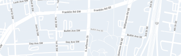
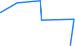
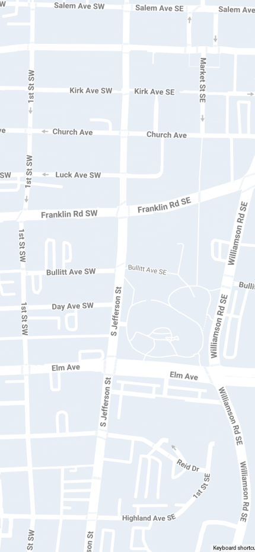
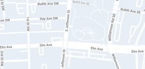

Home
Welcome back to Dispatch Pro


On Site (Stop 2)Fairfield, CA
Mar 15 08:00 - 10:00 AMRoanoke, VA
Mar 15 08:00 - 10:00 AM
Arriving In 2hrs
In Transit (Stop 99)DTL973W6
KenworthW900IPickup
Fairfield, CA
Mar 15 08:00 - 10:00 AM
Actual Depart: 05:00 PM
Delivery
Roanoke, VA
Mar 16 11:00 - 12:00 AM
DispatchPro
Load No. 12848
Micheal Scott · Kenworth - Unit 973
312 miles out
On duty change status, it is required to get your current location information and populate the city and state information.
